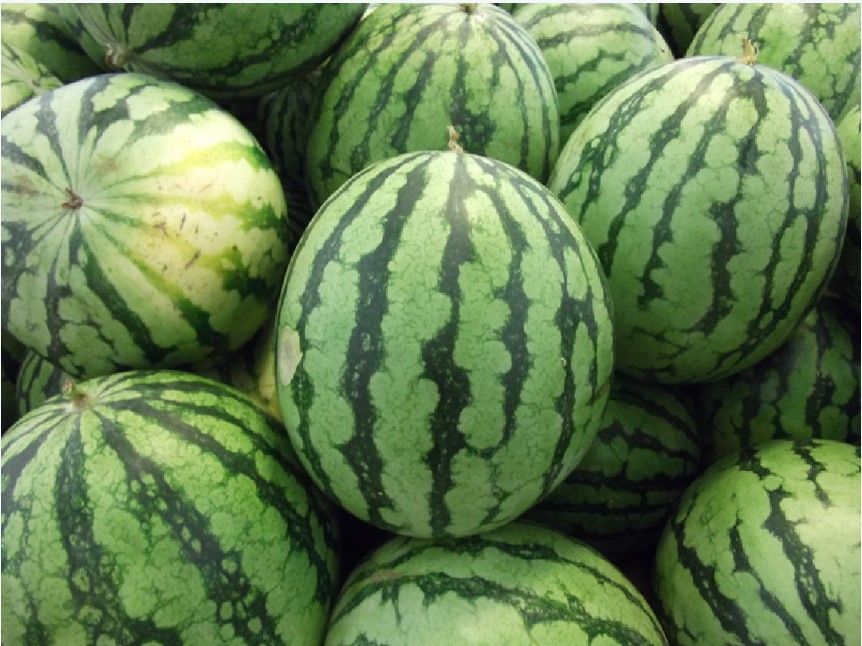
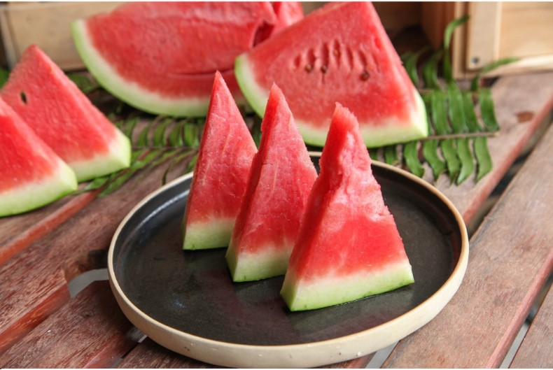

西瓜
一年生草本葫蘆棵蔓生植物
有卷鬚，夏日開單性花，黃色花冠，雌雄同株。果實為漿果，盛夏為成熟期，形狀為圓形或橢圓形，皮呈深綠色或淡綠色，果肉或紅或黃，子則有黑有白也有赤，水分佔百分之九十四，為夏天最便宜最有水分的水果。

西瓜營養成分
西瓜屬弱鹼性食物，可提升免疫力。瓜瓤內含茄紅素、胡蘿蔔素、維他命A及維他命C，皆為抗氧化力強之成份，能抑制活性氧產生、抑制細胞變異、修復受傷的細胞、促不正常細胞凋亡。黃心西瓜含有類胡蘿蔔素，亦能誘導癌細胞良性分化。含有生物鹼 (枸杞鹼)，可抑制癌細胞繁殖及腫瘤的形成。含配醣體(多醣20%)，可促體內天然殺手細胞T淋巴球及去活化巨噬細胞，產生抗體來抑制癌細胞成長。
有助腎臟病、肝病或糖尿病患者降低血壓、膽固醇及擴張血管。瓜皮之維他命C可增強人體對細菌及病毒抵抗力。

西瓜甜不甜？挑選技巧
1.輕拍西瓜，音調越高如「噹噹噹」，大約7分熟，口感較硬；若是「蹦蹦蹦」的低沉聲，代表9分熟；若出現「趴趴趴」的暗沉聲，手掌也沒有回彈感，應已過熟。建議購買時，輕拍4-5顆，挑選「中間」音質，不會太熟，也不致太嫩。
2.挑選果型「正」的西瓜，以「華寶」為例，以橢圓形為佳。
3.果皮花紋撐開，代表營養吸收較好，或授粉、結果時間比花紋窄的更早，熟度更佳。
西瓜皮利用
1.酸甜西瓜皮
酸甜西瓜皮是美國南方的傳統小吃，有著清脆的質感、酸香的味道和晶瑩的外觀，是非常清爽的開胃菜。
2.西瓜皮糖
糖化，是長時間保存夏季水果的一種常見辦法，也能為水果帶來全新的甜蜜風味。尤其一些營養豐富卻帶有苦澀感的果皮適合用糖化的技巧來處理。
3.西瓜皮果醬
西瓜皮果醬不會像梅類果醬那麼細膩順滑，因為西瓜皮即便切碎了，也很難煮得像梅子那麼爛。不過，西果皮在燉煮之後的軟度也足以用來塗抹麵包了。
資料來源: